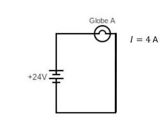
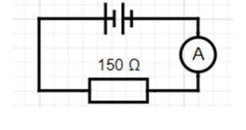
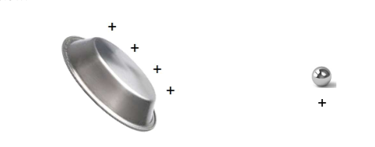
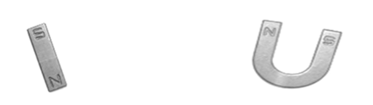
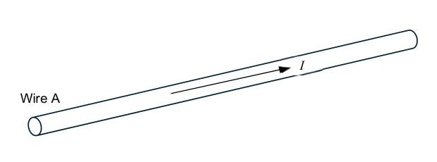
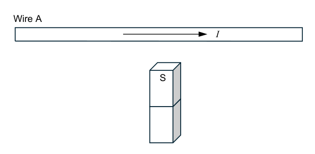

Section A: Multiple choice (9 marks)
What type of radiation is trapped by greenhouse gases to keep the Earth warm?
In a solar photovoltaic (PV) system, what does the inverter do?
Which gas contributes the most to the enhanced greenhouse effect?
The energy transformation in a wind turbine mainly converts:
A resistance of 0.22 kΩ is equal to:
k = kilo = 1000, so 0.22 × 1000 Ω = 220 Ω.

In the circuit above, the current through globe A is 4 A. What power does the globe use?
P = VI = 24 × 4 = 96 W.
A series circuit has a 24 V power source and three resistors of 50 Ω, 150 Ω and 800 Ω. The total resistance of the circuit is:
RT = 50 + 150 + 800 = 1000 Ω.
Which of the following energy sources is not renewable?
Which element is not magnetic?
Section B: Short answer (27 marks)
A Year 9 student making a presentation about climate change says: "The greenhouse effect is bad." Evaluate this statement scientifically, first describing the greenhouse effect, then explaining whether the statement is correct.
- Describe: the greenhouse effect is the absorption and re-emission of infrared radiation by greenhouse gases in the atmosphere (1 mark), which keeps the Earth at a higher temperature than it would otherwise be (1 mark).
- Evaluate: the statement is incorrect (1 mark), because the natural greenhouse effect keeps the Earth at a temperature that sustains life. It is the enhanced greenhouse effect, caused by extra greenhouse gases from human activity, that is harmful (1 mark).
Hydroelectric dams are a renewable energy source. List and briefly explain two advantages and two disadvantages of hydroelectric dams.
Advantages (any 2, 1 mark each): they don't emit greenhouse gases while generating electricity; flood control; water management/storage. ("Renewable" isn't accepted, as it's already given.)
Disadvantages (any 2, 1 mark each): costly to build; environmental damage, e.g. flooding valleys; they disrupt river ecosystems (fish migration, downstream flow).
The carbon cycle is the natural process by which carbon is exchanged between the atmosphere, oceans, soil and rocks, plants, animals and other living things. It plays a critical role in regulating Earth's climate and supporting life.
Describe one way carbon is removed from part of the environment, and explain why this is important for maintaining a balanced ecosystem.
Any one: photosynthesis by plants, or absorption of CO2 by the oceans (1 mark).
Plants take in CO2 for photosynthesis, which balances the CO2 released by respiration of all living organisms, keeping atmospheric CO2 stable (1 mark).
Carbon dioxide becomes less soluble in water as ocean temperatures rise. Explain why this is a problem for managing carbon dioxide levels in the atmosphere, and discuss the possible consequences for the climate.
Higher temperatures cause the oceans to release CO2 into the atmosphere (they also absorb less) (1 mark). This enhances the greenhouse effect even more, causing even higher temperatures: a feedback loop (1 mark).

The ammeter in the circuit above reads 3.0 A. Calculate the voltage of the power source.
V = IR = 3.0 × 150 = 450 V. (1 mark for working, 1 mark for the answer.)
Question 5 (2 marks)
A stainless steel bowl is rubbed with a rubber balloon and becomes positively charged. A small positively charged metal sphere is placed to the right of it.

Describe the movement of electric charges when the bowl is rubbed with the balloon, making the bowl positively charged.
Negatively charged electrons are removed from the bowl (transferred to the balloon), leaving the bowl positively charged.
In which direction does the force on the small sphere act?
Both are positively charged, and like charges repel.
Question 6 (6 marks)

For each magnet (the bar magnet and the horseshoe magnet), draw 4 magnetic field lines on paper, clearly showing the direction of the field with arrows. Describe your drawings, then compare.
For each magnet (2 marks each):
- 4 lines with the correct shape: for the bar magnet, loops from one end around to the other; for the horseshoe magnet, lines mostly running straight across the gap between the poles, plus some curving round the outside (1 mark).
- Arrows pointing from the north pole to the south pole (1 mark).
Lose 1 mark for each error, e.g. lines that touch or cross.
Compare the magnetic fields of a bar magnet and a horseshoe magnet in terms of their shape and strength at the poles. Explain why horseshoe magnets are often used where a stronger field is needed.
In a horseshoe magnet the poles are directly opposite each other and close together, so the field lines between them are closer together and almost parallel (1 mark). This gives a stronger (and more uniform) magnetic field in the gap than near the poles of a bar magnet (1 mark).
A bar magnet is broken into two smaller pieces. Describe what happens to each piece in terms of magnetism.
Each smaller piece becomes a magnet in its own right (1 mark), with its own north and south pole, because there are no magnetic monopoles (1 mark).
Question 8 (3 marks)
A wire, labelled A, carries a current flowing from left to right.

A magnetic field exists around the wire because of the current. Draw 3 arrows (on paper) to show the direction of the magnetic field around the wire. Describe your drawing, then compare.
- 3 circular lines around the wire (1 mark).
- The correct direction: using the right-hand grip rule (thumb pointing in the direction of the current, to the right), the field circles the wire anticlockwise when viewed from the right-hand end, i.e. coming up out of the page above the wire and going into the page below it (1 mark).
Lose 1 mark for each error, e.g. spirals.

A permanent magnet, with its S pole facing up, is brought close below wire A, as shown. In which direction is the force on wire A?
Right-hand slap rule: the field points down into the S pole, the current goes from left to right, so the force is perpendicular to both: into the page.